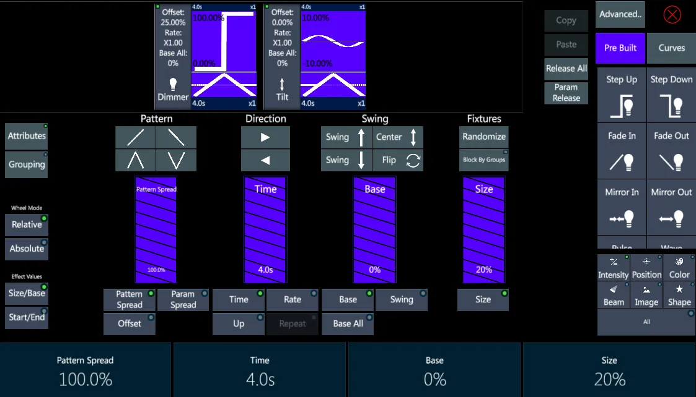

Chapter 9 Effect
This chapter deals with managing the effect engines and curves to create dynamic effects.
The following is covered in this chapter:
- 9.1 Curves
- 9.2 Effect Editor
- 9.3 Pre-Built Effects
- 9.4 Basic Effects
- 9.5 Advanced Effects
- 9.6 Library Effects
- 9.7 Effect Library
9.1 Curves
Effects are built from the following components:
Parameters - selected from the created fixtures available params.
Patterns - curves that affect the fixture selections order.
Primitives - curves that affect the parameters output values.
The same Curves database, containing pre-built curves and user-created custom curves, is used by different features on Vibe:
the Effect Engine to assign the curve to an effect
the Fan Mode to set pattern curves to the parameter fanning
the Address View to set specific curves to DMX addresses, such as dimmer curves
All the Curves are listed in the Curves View
The Curves View header has options to manage the Curves:
New - to create a new curve
Edit - to modify an existing curve
Delete - to delete a custom curve; pre-built curves cannot be deleted
Duplicate - to make a copy of an existing curve
Favourite - to assign the Favourite tag to the curve, setting it in higher position on the list
A Curve creation or editing will open the Curve Editor popup.
Tap the graphic to add anchor points.
Tap the {Remove Point} button to remove anchor points.
Tap an anchor point to select and move it on the grid.
Tap the {Anchor/Control} button to switch between straight and curved lines between the points.
A curved line can be made on both directions and be spread with the red linked buttons.
{Snap Horizontally} and {Snap Vertically} buttons fix the anchor points to the grids rows and columns.
The Name box is to write a name for the curve.
Tap Apply to store the Curve or Cancel to discard it.
9.2 Effect Editor
Effects are the combination of Parameters, Patterns and Primitives.
Vibe has 2 Effect Engines that provide up to 4 ways of effect building.
A Basic Effect Engine opens on the Smart Screen and allows the creation of:
Pre-built effects
Basic effects
To access the Basic Engine press the [EFFECT] button with an active fixture selection and optionally a param selection.

An Advanced Effect Engine opens on the Wide Screen and allows the creation of:
Advanced effects
Library effects
To access the Advanced Engine press the [VIBE] + [EFFECT] buttons with an active fixture selection and optionally a param selection.
Once a Fixture Selection is active, the effect editors can be opened even without a parameter selection, as that can be done afterwards, directly on the effect views.
This is not valid for the Basic Effects, that will be based on the Params selected at the moment that the [EFFECT] button is pressed.
9.2.1 Attributes
The Effect Editor on the Smart Screen has 2 tabs available:
Attributes - Used for managing Effect, Pattern and Primitive Settings.
Grouping - Used for setting Blocks Of and Sub Blocks, to split the fixture selection order.
Effect Settings can be applied in two modes:
Relative - Changes are applied maintaining the offsets between the curves settings.
Absolute - Changes are applied with values that are equal for all the selection.
The toggle choice between Relative and Absolute can be found both in the Basic and in the Advanced Effect Engine.
Effect Settings
Many different Settings can be used to customize the effects cycle and the curves distribution through the fixtures and the parameters involved.
The following Effect Settings affect both the Pattern and the Primitives:
Offset All - Moves the start time of the Effect Event along the X axis of the Effect Track.
Param Spread - Is a toggle button that enables the proportional offsetting of the start times of multiple Effect Tracks at the same time.
{Param Spread} is a quick way to make CMY or RGB effects where colors need to spread apart so as not to mix to black or white.
Pattern Settings
Some Effect Settings apply only to the Pattern, so they are called Pattern Settings.
The Pattern is the curve that sets the order of fixture selection during its transitions across the effect.
The Basic Effect Engine provides a selection of 4 Pattern possibilities:
Fade In = Linear order
Fade Out = Inverted order
Saw Tooth = Mirrored order from sides to center
Mirror = Mirrored order from center to sides
The Advanced Effect Engine permits to assign any curve from the Curves database as the Pattern.
The following Settings affect the Pattern:
Spread - Sets the percentage of offset between each fixture in a selection. 100% would evenly divide up the selections transition across the Primitive, while 0% would have all fixtures transitioning in unison.
UP - Based on the UP group #, each UP group will complete a full cycle across the Primitive before the next UP group can start.
With a selection of 8 fixtures assigned to a sine wave curve and a spread of 100%: - if UP is set to 1, fixture 1 will have to complete its full cycle before fixture 2 will begin, - if UP is set to 2, fixture 1 and 2 will split the cycle before the next two fixtures start.
Primitive Settings
Some Effect Settings apply only to the Primitive, so they are called Primitive Settings.
The Primitive is the curve applied to the parameter, that makes its values changing accordingly to the curves shape during the transitions cycle.
The following Settings affect the Primitive:
Time - The duration of time it takes each fixture to complete one cycle across the primitive.
Size - The amplitude of the primitives curve, stating the param range of values.
Base - The start point of the primitive, stating the starting param values.
Swing - The direction from the parameters start point (Base).
Swing {Up} {Center} {Down} - The keys to set the Swing at 0%, -50%, -100%.
If the Base value of tilt is 50% (0) and the Swing is Center (-50%), tilt would split center with a sine wave primitive assigned to it. Up (0%) would send the tilt from strait down to full out into the audience. Down (-100%) would send the tilt from strait down to full up upstage.
9.2.2 Grouping
Grouping tab allows to split the fixture selection order.
Tap the {Grouping} key - The Grouping tab will show
If the Offset Pattern Spread is not above 0%, tap the {Wave On} key. The Spread will be changed to 100%.
Set the {Blocks Of} [#] - This interleaves the Pattern into Groupings.
The Default for Blocks and Sub Block is 1/0 - No Groupings.
When {Blocks Of} is set to 1 or above, the Sub Blocks will move to 1 and Interleave Groups will be possible.
2/1 would interleave a selection into Odds/Evens.
3/1 would interleave a selection of 12 fixtures into [1+4+7+10] - [2+5+8+11] - [3+6+9+12]
- Set the {Sub Blocks Of} - Combines fixture in a selection, to act like single fixtures.
12/2 would combine [1+2] - [3+4] - [5+6] - [7+8] - [9+10] - [11+12]
For Grouping to be noticeable there must be a Pattern Spread above 0%.
As a shortcut, Setting {Sub Block Of} back to 0 allows {Blocks Of} to combine fixtures instead of interleaving - 2/0 would combine [1+2] - [3+4] - [5+6] - [7+8] - [9+10] - [11+12]
Blocks by Groups is a toggle option that allows to use Vibe Groups instead of Blocks and Sub Blocks.
This feature is very useful when an effect needs to run synchronized between groups of fixtures that dont have the same amount of fixtures.
To Block by Groups, select the Groups as Fixture Selection before entering the Effect Editor.
Make sure {Sub Blocks Of} is set to 0 or the groups will act as interleave instead of blocks.
9.3 Pre-Built Effects
Pre-Built Effects are the quickest and simplest way to build effects on Vibe.
They are based on pre-configured Parameters, Primitives and Effect Settings.
However the user can customize Pre-Built effects by editing all the available settings, using the Pre-Built library as a source to built new effects without starting from scratch.
To create a Pre-Built Effect:
Make a Fixture Selection: [FIXTURE] or [FIXTURE] [#] [+ -] [#]
Press [EFFECT] - The Smart Screen Effect Editor will open in the {Attributes} display with No Effect Events.
Tap on {Pre Built} key on the right of the Smart Screen
Choose the parameter Bank on the bottom of the column
Tap on the desired Effect to launch it
The Params and Curves involved will be loaded on the Effect Engine
The Smart Screen Effects Editor allows users to quickly build effects within the normal work flow of the console while still having access to the main live displays.
Effect Tracks are created for every selected parameter, but they are hidden from the view to get more space on the screen, and some advance operations are removed to speed up programming of simple effects.
After programming an Effect, Close the editor using the Red X in the upper right corner.
9.4 Basic Effects
Basic Effects are built by using the Basic Effect Editor on the Small Screen.
A Basic Effect is obtained by applying a Pattern and a Primitive to the selected Parameters.
To create a Basic Effect:
Make a Fixture Selection: [FIXTURE] or [FIXTURE] [#] [+ -] [#]
Select the Parameter or Parameters to be involved
Press [EFFECT] - The Smart Screen Effect Editor will open in the {Attributes} display with a blank Effect Event.
Tap on {Curves} key on the right of the Smart Screen
Tap on the desired Primitive - The Function shown on the Primitive will be loaded with a default linear Pattern.
The Pattern may be changed by by tapping any of the following:
/ Fixtures move in a positive direction across the selection.
Fixture move in a negative direction across the selection.
/Fixture are mirrored from the center.
/ Fixture are mirrored from the extremes.
- Set the Offset {Pattern Spread} - Default is 100%.
100% = Selection is divided 100% transitioning across the Primitive.
0% = all fixtures transition in unison.
Set Swing Up, Center, Down, or at a specific level
Adjust Size and Base to set the Low and High ranges of the values
Set the Time and Rate - Rate is a multiplier of the time value. Default Effect Time is 4 seconds to complete the cycle
Similar results to inverting the pattern functions may be achieved by reversing the selection direction with the direction { Negative}, {Positive } keys.
If more options are needed, the Advanced Effects Editor may be opened at any time by pressing [VIBE] + [EFFECTS] or the {Advanced} key. All the Effects running in the Basic Effects Editor will be synchronized with the Advanced Effect Editor.
9.5 Advanced Effects
Advanced Effects are built by using the Advanced Effect Editor on the Wide Screen, as a popup that opens over the screens page.
Both Basic and Advanced Effect Editors work on the same Effect Engine. Whichever is opened will be synchronized between the Effects Engines, but only one Effect Editor may opened at a time.
An Advanced Effect is also obtained by applying a Pattern and a Primitive to the selected Parameters, but it allows many more possibilities as it is characterized by independent and simultaneous Effect Tracks.
Each Effect Track can contain many different frames, called Effect Events, with independent primitives, patterns and settings. The result of an advanced effect can be someway similar to a Timeline of effects.
Effect Tracks are made up of Effect Events running horizontally.
Each Track must have:
- At least one Parameter. Additional parameters may be added but they will respond simultaneously to the Effect.
- At least one Effect Event. Additional events may be added to the track each with its own time base, or they may be merged and share the same time base.
Multi-track effects are effects requiring more than one parameter may be stacked on separate Effects Tracks.
Examples of Multi-track effects would be:
- CMY and RGB color effects
- Pan/Tilt Circles
- Blade effects- It is possible to make simultaneous changes to Primitive, Pattern, and Effect settings by toggling them on/off. The selected elements will get a red background.
The Advanced Effect Editor differs from the Basic Effect Editor in the following ways:
Parameter selection is made in the Effects Editor not before entering it.
Effect Tracks are shown.
Multiple Parameters may be assigned to the same Effect Track.
- Multiple Events may be assigned to the same Effect Track.
Effect sharing the same Effect Track can uses separate patterns or share patterns.
Pattern Size, Rate, and Base may be spread to create randomized looking effects.
Repeat allows to set the number of times each Effect Event repeats before moving on the the next Effects Event, when they are on the same Effect Track.
Only a fixture selection is needed before entering the editor. Parameters are selected on the effect editor using the {Filter} and {Choose Parameter} keys.
To create an Advanced Effect:
Make a Fixture Selection: [FIXTURE] or [FIXTURE] [#] [+ -] [#]
Press [VIBE] + [EFFECT] to open the Advanced Effect Editor
Select a Banks in the Filter area
Select a Parameter in the Choose Parameter area - the parameter background will turn purple.
Tap a blank space in the Parameter Column of an unassigned Effect Track - the parameter will be assigned to the Attributes Column.
Tap a Curve from the Favorites tab or the All Curves tab - the primitive curve background will turn purple.
Tap a blank space in the Effect Event Column - an Effect Event will be created with a Primitive and a Pattern.
To adjust Pattern and Primitive settings, tap on them and set the options with the virtual sliders in the right area
To adjust Effect settings, tap on the Tracks empty area and set the options with the virtual sliders in the right area
Close the Advanced editor using the Red X in the upper right corner.
Store the whole Effect directly to a cue or scene or to an Effects Library.
Advanced Effects can have many Effect Events on the same Effect Track based on different parameters.
Advanced Effects can have many Effect Tracks based on different parameters that will run simultaneously, but only one track per Param is allowed.
Combine Parameters:
Tap a parameter bank in the Filters area
Tap a parameter in the Choose Parameter area - the parameter background will turn purple
Tap a space in the Parameter Column already containing a parameter - the parameter will be merged into the parameter column
- All Primitives and Patterns will affect both parameters.
Stack Effects Events:
Tap a Function from the Favorites tab or All Functions tab - the Function background will turn purple
Tap the space to the right of an existing Effect Even - a new Effect Event will be stacked beside the existing one
- Each Stacked Effect Event can have its own Primitive and Pattern.
Combine Effects Events:
- Drag and drop the primitive of an Effect Event over an adjacent primitive - the primitives will be merged into the same event
- The primitives will now be combined and will share the pattern settings.
Duplicate Effects Events:
Tap either the pattern or primitive are of an Effect Event - the background of the pattern or primitive will turn red and the Effects Toolbar will open under the Effects Tracks.
Tap {+ Duplicate} - a duplicate of the Effect Event will be added to the right of the source Effect Event
Copy an Effect Track:
Copies the Effect Event settings to a new parameter, this will synchronize the effect between the parameters.
Tap a parameter bank in the Filters area
Tap a parameter in the Choose Parameter area - the parameter background will turn purple
Tap a blank space in the Parameter Column below an assigned Effect Track - the parameter will be assigned
Press the empty area to the right of the source Effect Event - the blank area will turn light blue and the Effects Toolbar will open under the Effects Tracks
Tap {Copy} - the source Effect Events settings will be copied
Tap in the blank area to the right of the new parameter - the area will turn blue and the Effects Toolbar will open under the Effects Tracks
Tap {Paste} - the source Effect Event settings will be pasted to the new parameter.
Delete an Effect Event:
Tap either the pattern or primitive of the event to be deleted - the background will turn red
Tap {Delete} on the Effects Toolbar below the Effect Tracks
Release a parameter from an effect:
Effect Parameters may be released using Edit Cue or Update pop-up.
- Edit Cue
Cue must be active on a controller or it will be loaded to the Master Controller and bump its current Qlist out.
[QLIST] [#] [CUE] [#] [EDIT] - Cue values will be placed in the Editor and the [UPDATE] key will flash red.
Press [VIBE] + [EFFECT] - The Advanced Effect Editor will open.
Select the fixtures requiring parameters to be released.
Tap the parameter or parameters in the parameter column to select the parameters - the parameters will turn purple.
Tap {Release} on the Effects Toolbar - Parameters will disappear from the Effect Editor - stage values will be returned to their recorded base values or home values if they had no programmed base values.
Press [UPDATE] to complete the edit and restore control to the source controller.
- Update
Cue being edited must be active on a controller.
Select the fixtures requiring parameters to be released.
Press the the parameters push wheel, or tap the wheel display above the wheel, to select the parameter.
Press [VIBE] + [EFFECT] - opens Advanced Editor.
Tap the parameter or parameters in the parameter column to select the parameters - the parameters will turn purple.
Tap {Release} on the Effects Toolbar - Parameters will disappear from the Effect Editor - Stage values will be returned to their recorded base values or home values if they had no programmed base values.
Press [UPDATE] - The Update popup will open.
Make sure the proper cue is selected in the Cue column.
Tap Apply or press [ENTER] to complete the update operation.
9.6 Library Effects
Library Effects are built by using the Advanced Effect Editor on the Wide Screen.
Library Effects are effects between libraries that can be stored in cues and scenes as well as in the effect library and managed as a normal effects, but they keep the library references.
Editing any of the reference libraries will automatically update the library effect (same as Cues and Scenes stored with library references).
To create a Library Effect:
Make a Fixture Selection: [FIXTURE] or [FIXTURE] [#] [+ -] [#]
Press [VIBE] + [EFFECT] to open the Advanced Effect Editor
Tap {Library Effects}
Select a Banks in the Filter area
Select a Library in the Choose Library area - the library background will turn purple.
Tap the effect track to add the starting library
Choose another Library in the Choose Library area
Tap the right side of the effect event to add the ending library
Tap a Curve from the Favorites tab or the All Curves tab - the primitive curve background will turn purple.
Tap on the effect event to assign the fading curve between the libraries - an Effect Event will be created with a Primitive and a Pattern.
To adjust Pattern and Primitive settings, tap on them and set the options with the virtual sliders in the right area
To adjust Effect settings, tap on the Tracks empty area and set the options with the virtual sliders in the right area
Close the Advanced editor using the Red X in the upper right corner.
Store the whole Effect directly to a cue or scene or to an Effects Library.
Same as Advanced Effects, Library Effects can have many Effect Events on the same Effect Track based on different libraries.
Same as Advanced Effects, Library Effects can have many Effect Tracks based on different libraries that will run simultaneously, but only one track per Bank is allowed.
An Effect can have both Advanced and Library Events, but the same parameter cannot be on more Tracks at the same time.
Library Effect settings and operations are managed in the same way as Advanced Effect settings and operations are done.
9.7 Effect Library
Once an effect has been created, it may be directly stored in cues and scenes or saved in Effect Libraries for future use.
Effect Libraries are stored like any other Library and have a specific Effect Library Sofkey view to recall them.
By Default Effect Libraries are Parameter Specific with disabled Reference, Timing and Base, and they filter and store all parameter types.
Default Settings for Effect Libraries can be changed in System Settings popup, in the Defaults tab. Individual settings can be set on each stored Effect Library.
Effect Libraries have an additional option to include or exclude the base values. Include Base is useful when effects must start from an absolute value.
Effect Libraries operations are managed in the same way as all other library operations are done.